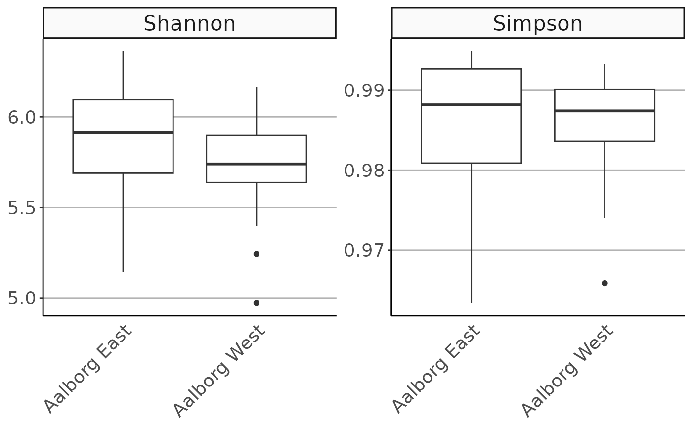

Calculate alpha-diversity indices for each sample and combines with the metadata.
amp_alphadiv(
data,
measure = NULL,
richness = FALSE,
rarefy = NULL,
plot = FALSE,
plot_scatter = FALSE,
plot_group_by = NULL
)
amp_alpha_diversity(
data,
measure = NULL,
richness = FALSE,
rarefy = NULL,
plot = FALSE,
plot_scatter = FALSE,
plot_group_by = NULL
)(required) Data list as loaded with amp_load.
Alpha-diversity measure(s) to be included if not all. A vector of one or more of:
"uniqueotus"
"shannon"
"simpson"
"invsimpson"
(logical) Also calculate sample richness estimates (Chao1 and ACE) as calculated by estimateR. (default: FALSE)
Rarefy species richness to this value before calculating alpha diversity and/or richness. Passed directly as the sample argument to rrarefy. (default: NULL)
(logical) Produce a boxplot instead of a table. (default: FALSE)
(logical) If TRUE produce a scatter plot instead of a boxplot. (default: FALSE)
Group the samples by a categorical variable in the metadata. If NULL then all samples are shown in a single group.
A data frame or a ggplot if plot is set to TRUE
The alpha-diversity indices are calculated per sample using the vegan function diversity, where the read abundances are first rarefied using rrarefy by the size of the rarefy argument. Refer to the vegan documentation for details about the different indices and how they are calculated. If no measure(s) are chosen, all diversity indices will be returned.
McMurdie, P.J. & Holmes, S. (2014). Waste not, want not: Why
rarefying microbiome data is inadmissible. PLoS Comput Biol
10(4): e1003531. DOI:10.1371/journal.pcbi.1003531
# Load example data
data("AalborgWWTPs")
# Subsample/rarefy to 20000 reads and then calculate
# Shannon and Simpson alpha-diversity indices
alphadiversityresult <- amp_alphadiv(
AalborgWWTPs,
measure = c("shannon", "simpson"),
rarefy = 20000
)
#> The following sample(s) have not been rarefied (less than 20000 reads):
#> 16SAMP-703, 16SAMP-739, 16SAMP-10907
# Explore the results in the data frame
# View(alphadiversityresult)
# Generate a plot instead
amp_alphadiv(
AalborgWWTPs,
measure = c("shannon", "simpson"),
rarefy = 20000,
plot = TRUE,
plot_group_by = "Plant"
)
#> The following sample(s) have not been rarefied (less than 20000 reads):
#> 16SAMP-703, 16SAMP-739, 16SAMP-10907
